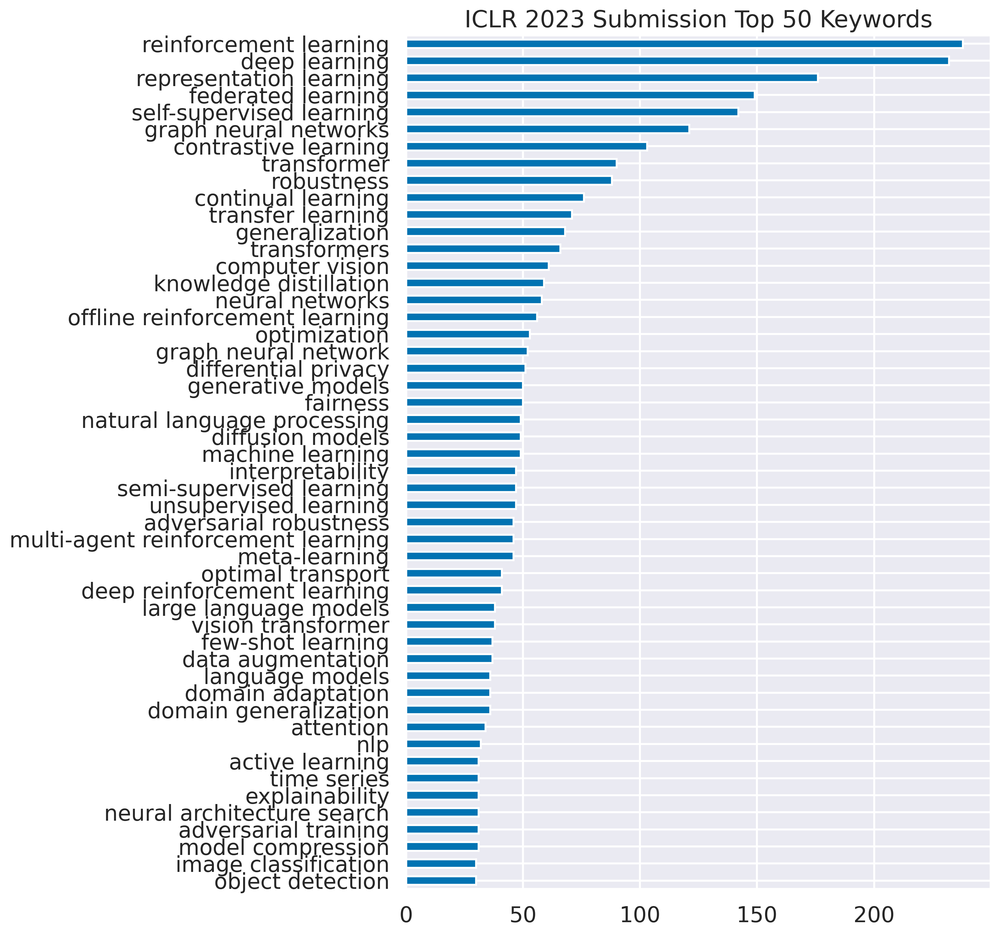
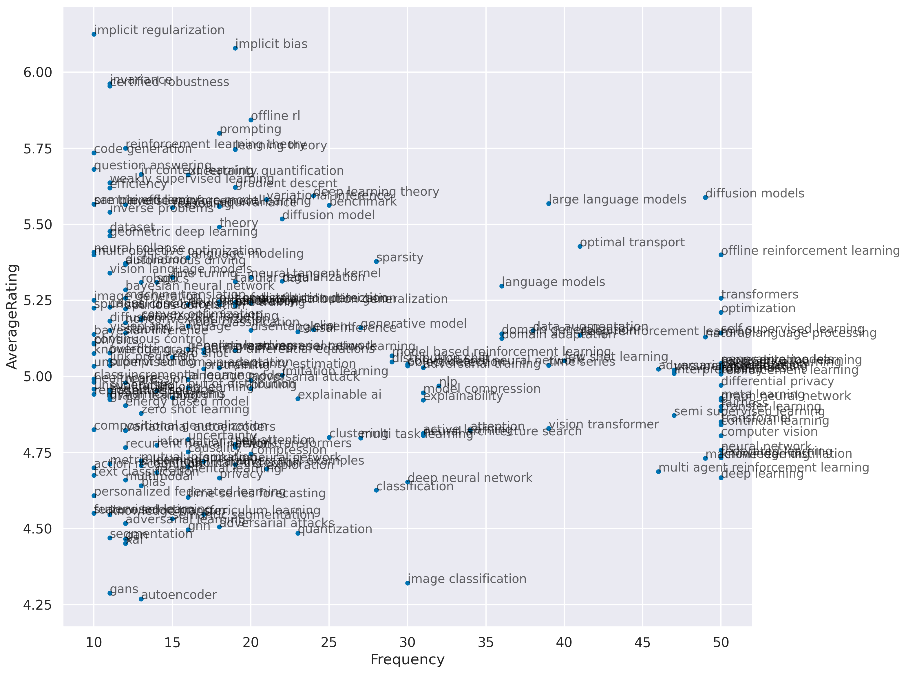
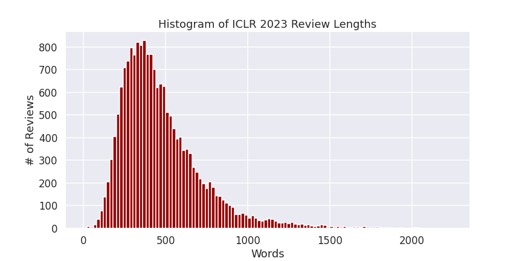
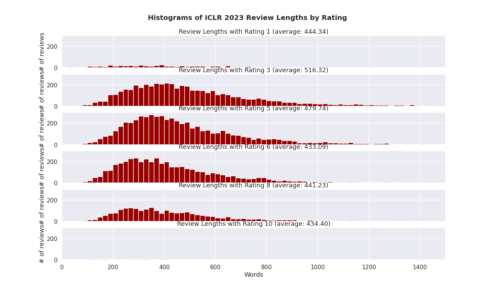
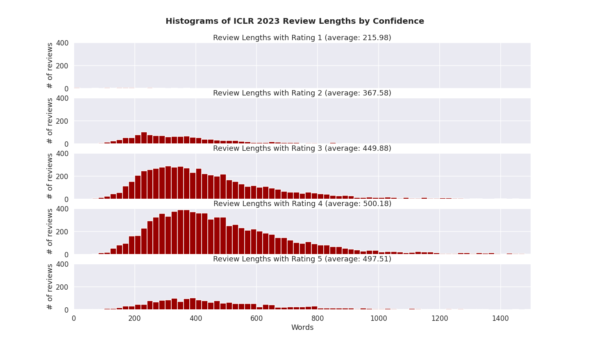

Fork me on Github

All submissions
-
4874 submitted papers
-
4874 total submissions with average rating of 5.22 ± 1.22.
-
4176 active submissions with average rating of 5.16 ± 1.20.
-
698 withdrawn submissions with average rating of 4.03 ± 0.74.
-
Rating distribution:

-
Top Keywords:

-
Keywords vs Rating:

-
Other wordcloud:

-
Review lengths:

-
Review lengths vs ratings:

-
Review lengths vs confidence:

-
Number of pages vs ratings: